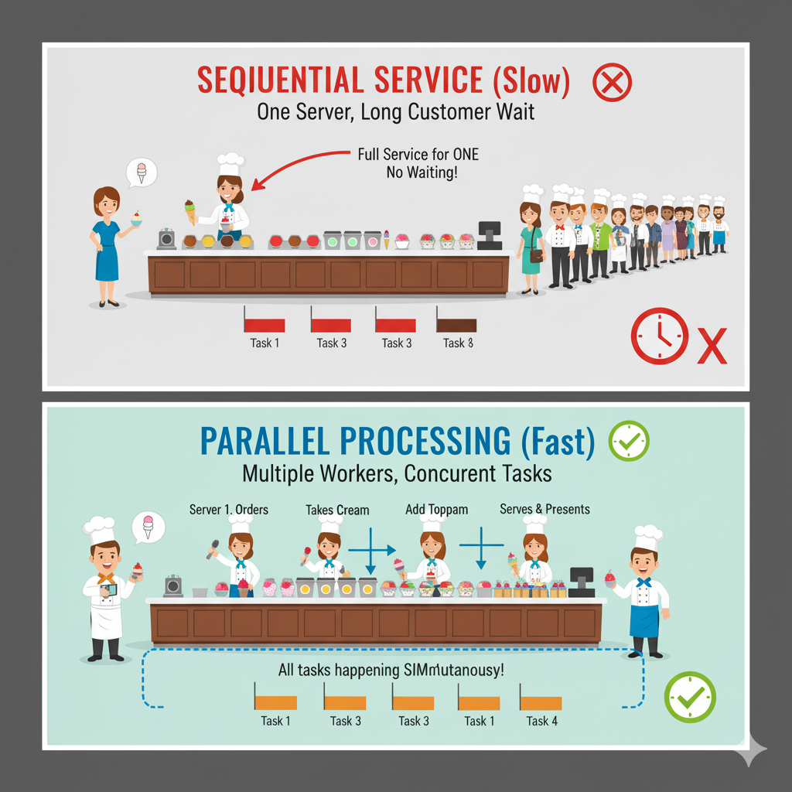
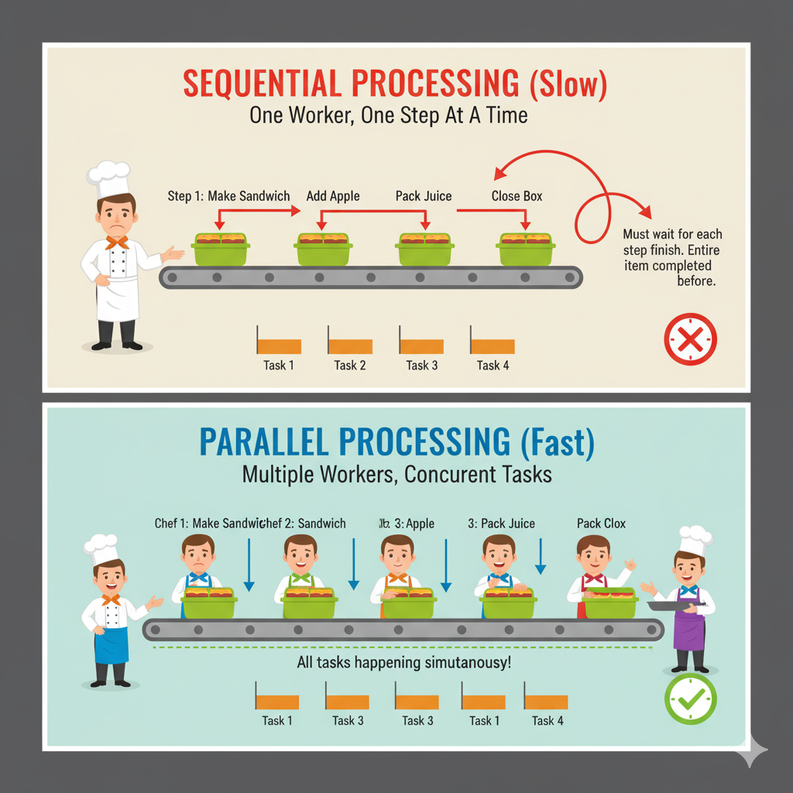
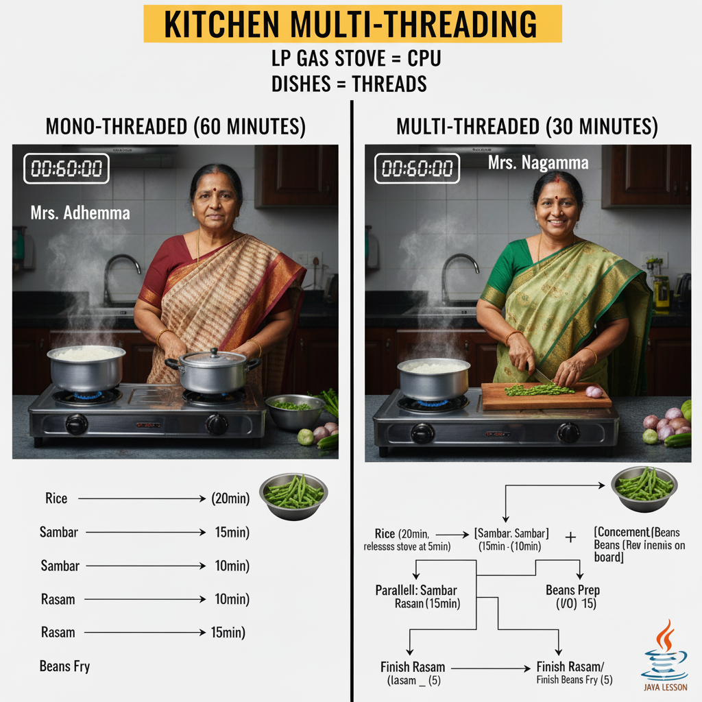
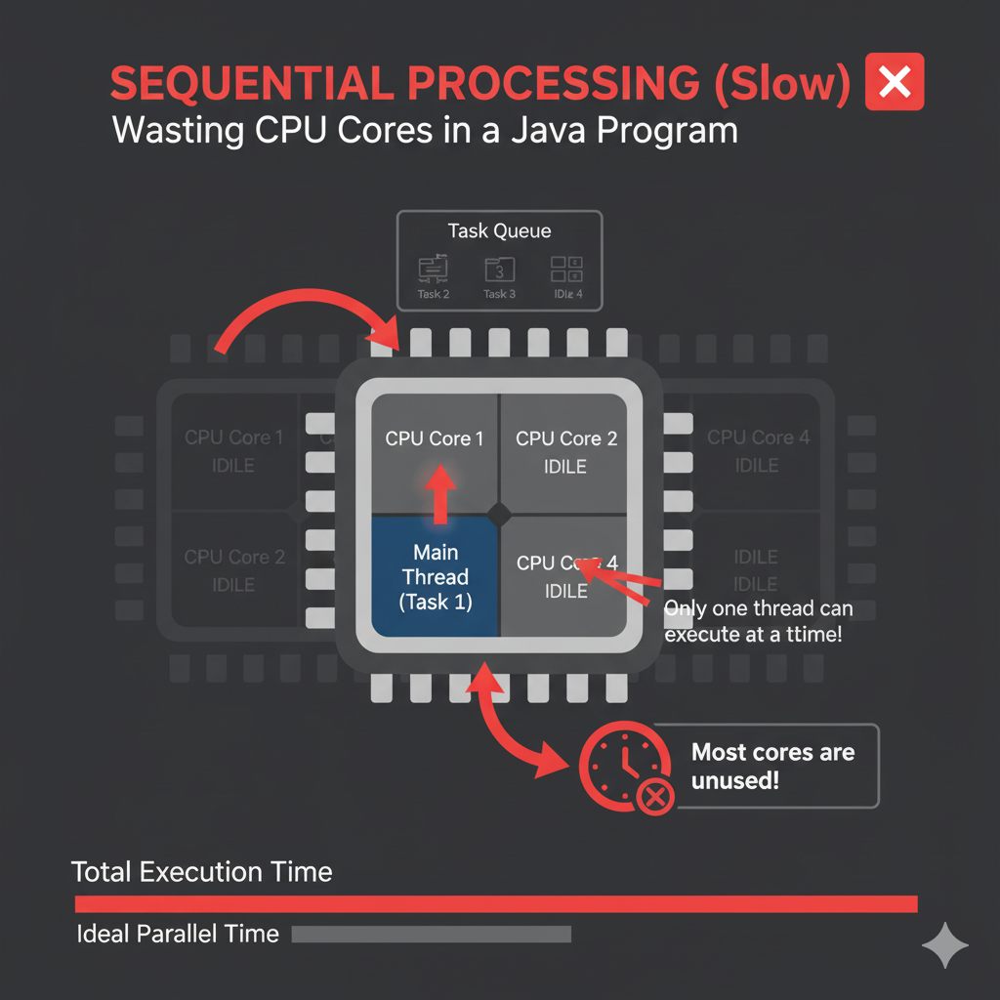
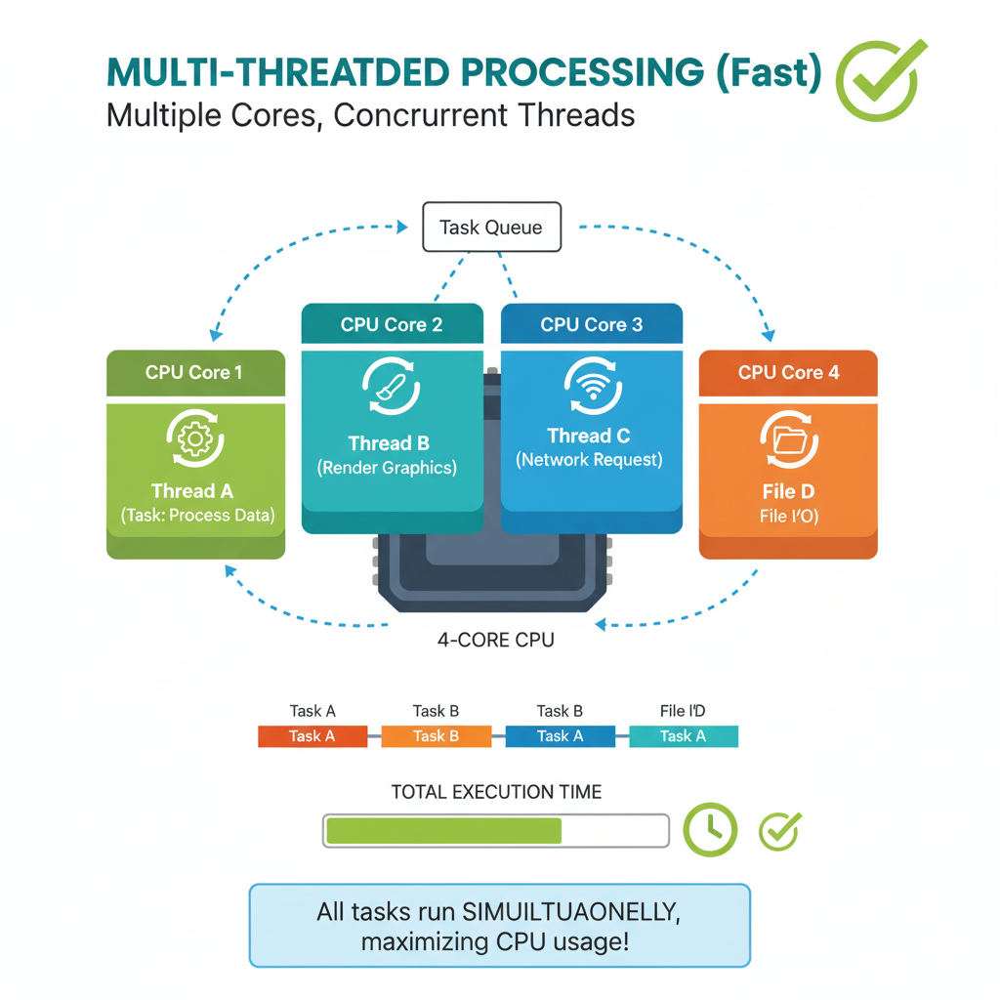

Introduction
Authored by - Hari Babu Mutchakala


A thread is a single sequential flow of control within a program. It is the smallest unit of processing that can be scheduled by an operating system. Java's multithreading feature allows concurrent execution of two or more parts of a program.
Illustrative Program (Basic task)
// Single-threaded execution example
public class SimpleTask {
public static void main(String[] args) {
System.out.println("Starting the main task...");
// Simulating a simple operation
for (int i = 0; i < 3; i++) {
System.out.println("Main thread counting: " + i);
}
System.out.println("Main task finished.");
}
}
Need for Multiple Threads



Multiple threads are crucial for improving application responsiveness, utilizing multi-core processors, and managing concurrent tasks (like network I/O and user interaction) without blocking the main application flow.
Illustrative Program (Simultaneous printing)
// The need for concurrent execution to run tasks in parallel (conceptually)
class Task implements Runnable {
private String name;
public Task(String name) { this.name = name; }
public void run() {
for (int i = 0; i < 3; i++) {
System.out.println("Thread " + name + " running: " + i);
}
}
}
public class MultipleThreadsNeed {
public static void main(String[] args) {
new Thread(new Task("A")).start();
new Thread(new Task("B")).start();
}
}
Multithreaded Programming for Multi-core Processor
Multithreading allows different threads to run truly in parallel on separate processor cores, significantly boosting performance for CPU-bound tasks by leveraging the hardware's capabilities.
Illustrative Program (Parallel processing concept)
// Conceptual example of tasks running on different cores
// Actual core utilization depends on OS scheduler
class CoreTask implements Runnable {
public void run() {
System.out.println(Thread.currentThread().getName() + " is performing a heavy calculation...");
}
}
public class MultiCoreDemo {
public static void main(String[] args) {
// Create as many threads as cores (ideally)
int availableCores = Runtime.getRuntime().availableProcessors();
System.out.println("Available Cores: " + availableCoves);
for (int i = 0; i < availableCores; i++) {
new Thread(new CoreTask(), "CoreThread-" + i).start();
}
}
}
The Thread Class (and Runnable Interface)
In Java, threads can be created by either extending the **`Thread`** class or implementing the **`Runnable`** interface. The `Thread` class provides constructors and methods to manage the thread.
Illustrative Program (Extending Thread)
// Creating a thread by extending the Thread class
class MyThread extends Thread {
public void run() {
System.out.println("Thread created by extending Thread is running.");
}
}
public class ThreadClassDemo {
public static void main(String[] args) {
MyThread t = new MyThread();
t.start(); // Invokes the run() method
}
}
Main Thread and Creation of New Threads
Every Java program starts with a **main thread**. New threads are created by the main thread (or other threads) typically using the **`new Thread().start()`** mechanism, which tells the JVM to allocate resources and execute the thread's **`run()`** method.
Illustrative Program (Getting Main Thread and Starting New)
public class MainThreadAndCreation {
public static void main(String[] args) {
// Get the main thread's name
Thread mainThread = Thread.currentThread();
System.out.println("The Main Thread is: " + mainThread.getName());
// Create and start a new thread using Runnable
Runnable r = () -> {
System.out.println("New Thread created by Main Thread is running: " + Thread.currentThread().getName());
};
new Thread(r, "Worker-1").start();
}
}
Thread States

A thread exists in various states throughout its life cycle (NEW, RUNNABLE, BLOCKED, WAITING, TIMED_WAITING, TERMINATED). Understanding these states is crucial for synchronization and thread management.
Illustrative Program (Checking Thread State)
public class ThreadStatesDemo implements Runnable {
public void run() {
try {
// State: TIMED_WAITING
Thread.sleep(1000);
} catch (InterruptedException e) {
Thread.currentThread().interrupt();
}
System.out.println("Thread finished.");
}
public static void main(String[] args) throws InterruptedException {
Thread t = new Thread(new ThreadStatesDemo(), "StateChecker");
// State: NEW
System.out.println("Before start(): " + t.getState());
t.start();
// State: RUNNABLE (or possibly running)
System.out.println("After start(): " + t.getState());
// Let it run for a moment
Thread.sleep(100);
// State: TIMED_WAITING (because of Thread.sleep(1000) inside run())
System.out.println("During sleep(): " + t.getState());
t.join(); // Wait for thread to finish
// State: TERMINATED
System.out.println("After join(): " + t.getState());
}
}